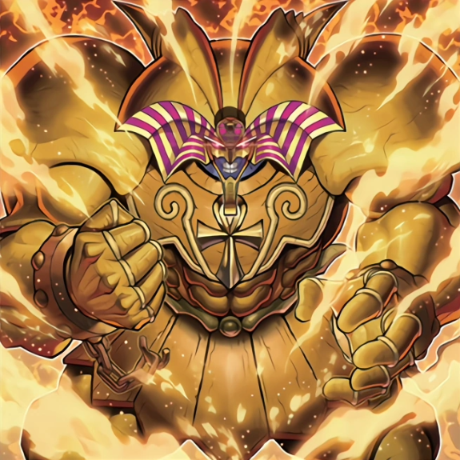

-
Mago Negro

Quando esta carta é Invocada Normalmente, você pode adicionar uma Magia/Armadilha do seu Deck à sua mão, que mencione "Mago Negro". Durante o turno do seu oponente, se você ativar uma carta de Magia/Armadilha ou efeito enquanto esta carta estiver no seu Cemitério, você pode oferecer 1 monstro Mago como Tributo e adicionar esta carta à sua mão. O Mago Negro pode ser invocado por Invocação-Especial da sua mão, oferecendo como Tributo 1 "Mago Negro"
ATK/ 2500 DEF/ 2100 -
Dragão Branco de Olhos Azuis

Este dragão lendário é uma poderosa máquina de destruição. Praticamente invencível, muito poucos enfrentaram esta magnífica criatura e viveram para contar a história.
ATK/ 3000 DEF/ 2500 -
Slifer, o Dragão Celeste

Requer 3 Tributos para ser Invocado por Invocação-Normal (não pode ser Baixado Normalmente). A Invocação-Normal deste card não pode ser negada. Quando Invocado por Invocação-Normal, cards e efeitos não podem ser ativados. Durante a Fase Final, se este card foi Invocado por Invocação-Especial: envie-o para o Cemitério. Este card ganha 1000 de ATK e DEF para cada card em sua mão. Quando um ou mais monstros forem Invocados por Invocação-Normal ou Especial no lado do campo do seu oponente com a face para cima em Posição de Ataque: esses monstros perdem 2000 de ATK e, depois, se qualquer um deles tiver o ATK reduzido a 0 como resultado, destrua-o.
ATK/ ? DEF/ ? -
O Dragão Alado de Rá

Não pode ser Invocado por Invocação-Especial. Requer 3 Tributos para ser Invocado por Invocação-Normal (não pode ser Baixado Normalmente). A Invocação-Normal deste card não pode ser negada. Quando Invocado por Invocação-Normal, outros cards a efeitos não podem ser ativados. Quando este card for Invocado por Invocação-Normal: você pode pagar Pontos de Vida até ter apenas 100 restantes; este card ganha ATK e DEF igual ao valor de Pontos de Vida pagos. Você pode pagar 1000 Pontos de Vida e, depois, escolher 1 monstro no campo; destrua o alvo.
ATK/ ? DEF/ ? -
Obelisco, o Atormentador

Requer 3 Tributos para ser Invocado por Invocação-Normal (não pode ser Baixado Normalmente). A Invocação-Normal deste card não pode ser negada. Quando Invocado por Invocação-Normal, cards e efeitos não podem ser ativados. Não pode ser alvo de Magias, Armadilhas ou efeitos de card. Durante a Fase Final, se este card foi Invocado por Invocação-Especial: envie-o para o Cemitério. Você pode oferecer 2 monstros como Tributo; destrua todos os monstros que seu oponente controla. Este card não pode declarar um ataque no turno em que este efeito for ativado.
ATK/ 4000 DEF/ 4000 -
Kuriboh Alado

Se este card no campo for destruído e enviado para o Cemitério: pelo resto do turno, você não sofre dano de batalha.
ATK/ 300 DEF/ 200 -
Exodia
"Exodia" é um arquétipo de monstros do Tipo Mago de TREVAS, com o primeiro membro lançado em A Lenda do Dragão Branco de Olhos Azuis e seu primeiro suporte lançado na Millennium Box Gold Edition. Ele são focados em condições de vitória alternativa. Ele está relacionado ao arquétipo "Forbidden One".
ATK/ ? DEF/ 0